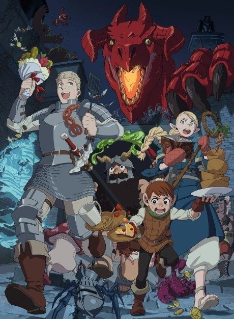

AnimeSeason 1 episodes numbered 1-24 (season 2 is slated for October 2027 and has not aired).
After a red dragon swallows his sister Falin, Laios and his broke party rush back into the dungeon, surviving by cooking the monsters they meet with the help of dwarf chef Senshi.
The party finally confronts the red dragon, hoping Falin can still be saved.
Rival adventurer Kabru and Laios's old teammate Shuro catch up with the party deep in the dungeon.
Falin, now a monstrous chimera, roams the lower floors as the party decides to follow her.
The party learns the truth behind the Golden Kingdom buried in the dungeon and Senshi's own past.